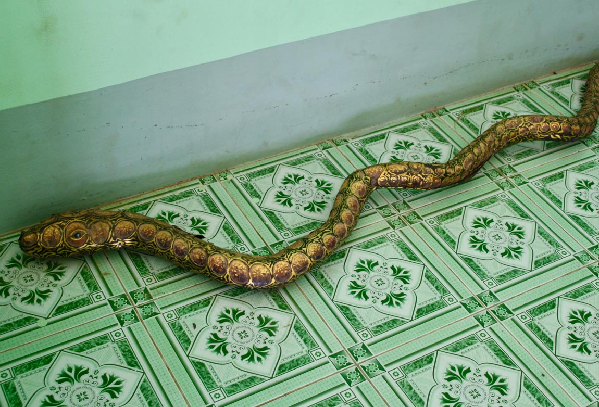
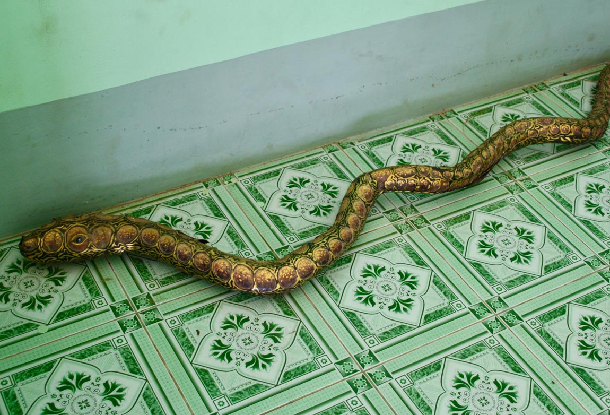

Monsoonal Mult iplicities
Never is a plateau separable from the cows that populate it, which are also the clouds in the sky.
------ Deleuze and Guattari, A Thousand Plateaus, p. 23.
Monsoonal Multiplicities is an exhibition project that brings together texts, maps, photographs and videos generated by Monsoon Assemblages researchers during their five-year intra-action with the monsoon in south and south east Asia. It offers visitors a virtual experience of the monsoon as a multiplicity of entangled beings, energies, infrastructures, lifeworlds, matters, technologies and knowledge practices. It is organized in five rooms - framings, infrastructures, interspecies interlocuters, matters and urban assemblages – that serve as agential cuts through monsoonal encounters. The website has been designed to enable visitors to navigate rhyzomically through these rooms - to scroll down, leap across, return, zoom in, pause, or in other ways intra-act with the material without ever having to return to a home page. Navigation becomes a way of constructing constitutive interrelations across difference, providing an embodied virtual experience of the multiplicitous monsoon.
Hilsa, the national fish of Bangladesh, is entangled with processes of urbanization and industrialization. Construction of dams, barrages, roads, bridges, ports, factories and energy infrastructures impact delta waterworlds. Such anthropogenic activities alter water and sediment flows, intensify nutrient and pollution loads, and disrupt underwater environments. Hilsa are responding in unforeseen and unpredictable ways.
Hilsa and the Monsoon
Known as ilish in Bengali, hilsa are a monsoonal species. They inhabit the entire coastline of the Indian Ocean, but they are most abundant in the upper reaches of the Bay of Bengal. At the apex of the Bay immense monsoonal flows merge with ocean currents and tides creating a unique ecosystem. While hilsa spend most of their life in the Bay they migrate to the rivers of the delta to breed. The rains of the south‐west monsoon act as an ecological trigger, initiating their spawning migration. Hilsa used to migrate to the upper reaches of all the major rivers, but in recent times their range has dramatically reduced. The altered mobilities of the hilsa are an indicator of shifting human-nonhuman relations
“The Ilisha frequents the Bay of Bengal and the large salt watef estuaries of the Ganges, and in thf rainy season ascends the largef rivers to spawn. I have seen if as high as Agra and Kanpur, buf … about Calcutta and Dhaka if is in the utmost abundance anf perfection”
------ (Francis BuchananHamilton, 1822: 244).


The Fisher
Fishers from the Meghna River ascribe changing hilsa migration patterns to the inhospitable river environment. The Farakka Barrage, commissioned in 1975 by the Indian government, transformed Bangladesh’s rivers. The barrage reduced the velocity of monsoonal flows leading to siltation and sedimentation downstream, restricting hilsa movements. Fishers are also concerned by illegal sand mining, fuelled by Dhaka’s booming construction industry. Flotillas of sand dredgers vacuum gravel and sand from the river, altering its bathymetry and disturbing fish migration routes. In response to changing hilsa movements, fishers are forced deeper into the turbulent Bay of Bengal.


“The river has changed;
the difference is like day and night.
When we were children the flow was much higher than at this time”
------ Hilsa Fisher, Chandpur
Huge flotillas of sand dredgers proliferate along the Meghna River just below Dhaka. Dredging increases turbidity and underwater noise, disturbs plankton and endangers fish


Fishing the Meghna: Fishers attune themselves to rivers, tides, weather and fish migration. Through embodied practices they gain intimate knowledge of hilsa and their monsoonal environments.
The Scientist
In recent decades, rapid urbanization and the increased purchasing power of the urban middle class has led to greater fish consumption. Increased demand for the “queen of fish” resulted in unsustainable fishing practices with hilsa numbers declining from the 1970s onwards, reaching record lows in the early 2000s. Alarmed by diminishing numbers and changes to migration patterns, scientists mobilised to conserve the species. To curb unsustainable fishing, and regulate supply to urban markets, scientists developed annual ban periods to “save mother hilsa”.


BFRI Hilsa Research: Bangladeshi scientists involved in hilsa research spend hours, days and weeks on boats, often working alongside traditional fishers, netting, weighing, examining and observing fish.
The strict ban period is March to April. We say, now it’s your turn to go back to the ocean. Go peacefully, without interruption, without problem
------ Fisheries researcher, Dhaka


Located at Chandpur, at the confluence of the Padma and Meghna rivers, the Bangladesh Fisheries Research Institute (BFRI) Riverine Station is at the forefront of hilsa research.
The Cook
Hilsa is cooked in a myriad of ways, but knowing how to buy hilsa is an essential part of the cooking process. Not all hilsa are the same, river hilsa are tastier than marine hilsa. The fish gain fat and protein and take on the taste of the river as they move upstream; the further they travel the tastier they become. As their taste peaks at the height of the rains, for many, hilsa is the taste of monsoon season. Their taste varies from river to river. Hilsa from the river Padma, are thought to be the tastiest due to the characteristics of the river water. However, the taste of hilsa is changing. Infrastructural interventions alter river ecologies, affecting the taste, smell and texture of fish, which is sensed by those who consume them.
When you go to the market, the first thing you learn is how to spot a Padma from a Meghna hilsa. These are things you learn almost through osmosis if you are born here
------ Amateur cook, Khulna
The Activist
Hilsa can no longer be found in the Buriganga River, one of the most polluted rivers in the world. Its waters are a glossy blue-black, covered with rampant islands of water hyacinth which feed on contaminants. The river carries an all-pervasive stench from effluents spewed from tanneries, garment factories, cement plants and fertiliser manufacturers along its banks. The flushing effects of the monsoon carries pollutants downstream, affecting fish and people who depend on them. Environmental activists believe pollution is changing hilsa movements. Hilsa have a highly developed olfactory organ, making them sensitive to smell and taste. Pollutants may impact their olfactory memory and influence migration routes.
Hilsa are extremely sensitive ... They can smell hydrogen sulphide, that rotten egg smell, which means they never come to Buriganga or Dhaka city rivers anymore
------ Environmental activist, Dhaka
Human-hilsa Entanglements
Following the hilsa highlights the multiplicity of ways in which fish, people, weather, infrastructure, cities and materials are entangled with one another. As a transboundary monsoonal organism, the hilsa is loved across geographies, nationalities, religions, environments and culinary traditions. The decline of this glittering, silver-scaled fish will impact environments and ecologies across the region, irrevocably changing human and nonhuman lifeways in the process.
Mache Bhate Bengali
“Fish and rice make a Bengali”

Earth goddesses, snakes
and the monsoon
Snakes are ectothermic beings; temperature, humidity, cloud cover and precipitation influence their behavior. Snake activity increases during monsoon months and snake bite incidents surge as human-snake encounters intensify. Snakes and nagas, serpent-like beings, are associated with water, rain and fertility across the Indian subcontinent. Snake rituals reveal entanglements between snakes, people, belief systems and the monsoon.

Mariamman, snakes and anthills
Mariamman is a rain goddess, invoked to bring rains to Tamil Nadu. Temples to the goddess are often made around anthills where snakes, particularly cobras, are believed to dwell. Both snakes and anthills are forms of the goddess. Milk is given as ‘cooling’ offerings to snakes, and mounds are adorned with yellow flowers and vermillion. Historically Mariamman was the goddess of smallpox, a seasonal disease that proliferated during the dry and windy month of Aadi, and subsided with monsoon onset. Songs to the goddess compared pox-affliction to snakebites. Mariamman is still immensely popular in Chennai


Manasa, snake charmers
and waterways
Bede are skilled snake catchers in Bangladesh who remove poisonous snakes that infest Bengali villages during monsoon season. Bede lead nomadic lives, moving on boats across the riverine landscape of the Bengal delta. They charm snakes and cure snake bites as they travel. Monsoon season is important for the Bede as this is when snakes are most active and river water is high, allowing easy movement. While charming snakes, they perform rituals and songs to the Bengali snake goddess Manasa. In recent times, rivers have deteriorated and snake populations have declined making Bede nomadic life increasingly challenging.


Naga goddesses, snake pagodas
and mud volcanoes
Snake and naga worship was part of pre-Buddhist animist traditions in Myanmar. A place with lingering associations to naga beliefs are the mud volcanoes of Minbu, known as Naga Pywet Taung, or ‘mountain where the naga breathes’. Worshippers pour milk libations into the bubbling mud pools and give offerings to goddess Naga Mae Daw. Minbu is located near the Myanmar oil fields of Yenangyaung. They provide tangible connections to the treasures of the earth that nagas are rumoured to guard. Although nagas dwell in the underworld, they are also believed to have power over wind and rain.


 

Human-snake entanglements
Snake rituals and associated mythologies embody intimate connections between humans, snakes, weather and environment that have emerged over time. These practices are not just symbolic, but maintain ties between humans, nonhumans and their earthly ecologies. In recent years there has been a significant decline in snake populations throughout the Indian subcontinent and around the globe. South Asia is where most urban growth is expected to occur in coming decades, with further consequences for nonhuman species. Snakes are particularly at risk and although rituals offer ways of ‘making kin’ with snakes, they may not be sufficient to ensure their future survival.